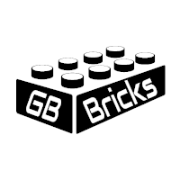

GB Bricks is an online store selling LEGO parts. It was originally set up many years ago in the UK as a hobby to make a small amount of income that can then be used to buy LEGO to use in creations. There are two separate store fronts, one on the BrickLink marketplace and one on the BrickOwl marketplace.
 After moving to the USA, the hobby was turned into a full-time business and turns a nice profit each year and now has over 100,000 parts for sale.
Utilizing the two online marketplaces dedicated to stores like GB Bricks, a potential customer base of over a million people could be reached. Running the store also allowed me to dabble in my passion for developing some software as managing the large inventory of very small parts needed to be done carefully.
As all I knew was Microsoft Office programs along with a decent amount of VBA, my options for what to use for this program were limited. But after a few iterations, a program was created to manage the inventory and fincances of the store using Access and Excel. This program is now being completely re-written in C# as more skills are learned through the Grand Circus Bootcamp.